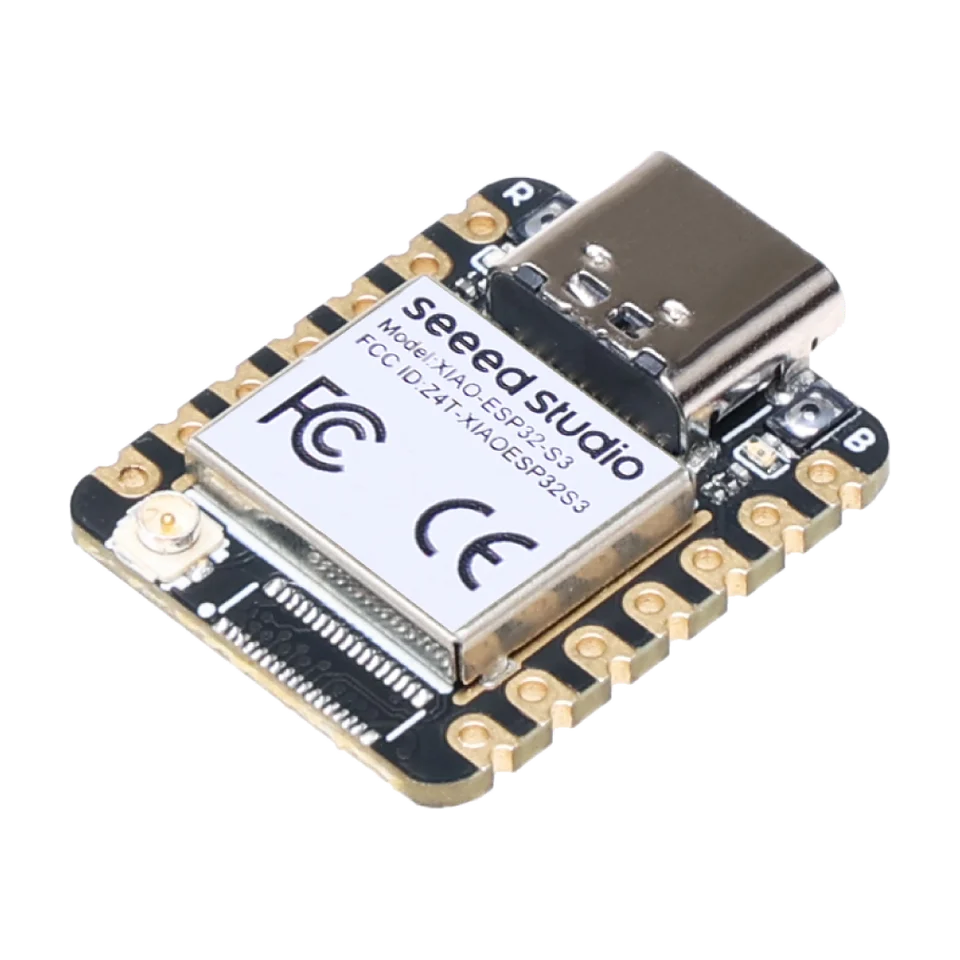

tiny breadboard target
Seeed Studio XIAO ESP32-S3 for tiny ESP32 test fixtures
Use the Seeed Studio XIAO ESP32-S3 when USB-C, tiny size and exposed pins matter more than onboard controls. It fits breadboard-friendly ESP32-S3 wiring, compact fixtures and USB-C hardware debugging setups.

Board-specific guide for Seeed Studio XIAO ESP32-S3 firmware, tiny USB fixtures, breadboard wiring and exposed-pin debugging.
compatibility
XIAO ESP32-S3 board overview
Use this page to judge XIAO ESP32-S3 for tiny breadboard, UART, I2C, SPI and GPIO fixtures.
practical tasks
XIAO ESP32-S3 supported workflows
XIAO ESP32-S3 is a breadboard-friendly choice for compact UART, I2C, SPI and GPIO tests with careful pin planning.
Use as a small serial console or bridge in test setups.
Wire modules, memory chips and bus devices when pin planning is clear.
Run pulse, measure and listen tasks on exposed pins.
Embed Bit Pirate workflows into a compact USB-connected test fixture.
XIAO ESP32-S3 pin mapping and wiring notes
The XIAO form factor is compact, so verify the exact pin labels from the board pinout image and avoid assuming a DevKit pinout. Use safe 3.3 V logic or add level shifting for other target voltages.
Always verify voltage and pin mapping before connecting a target. The ESP32-S3 side is not 5 V tolerant unless external level shifting or the Dock path is used correctly.
useful pages
XIAO ESP32-S3 useful next pages
Jump from XIAO ESP32-S3 to compact fixture protocols, recipes, modules and browser tools.
Protocol modes
Useful recipes
Use the task guide for wiring, commands and troubleshooting.
Choose GPIO pinout before wiringUse the task guide for wiring, commands and troubleshooting.
Bridge UART consoleUse the task guide for wiring, commands and troubleshooting.
Scan unknown I2C deviceUse the task guide for wiring, commands and troubleshooting.
Tools and hardware
Open Web Serial for XIAO ESP32-S3 CLI sessions after flashing.
Web FlasherFlash the matching XIAO ESP32-S3 build from a compatible browser.
Hardware ecosystemCheck docks, adapters and wiring hardware that pair with XIAO ESP32-S3.
Modules and target chipsBrowse chips and breakout modules that make sense with XIAO ESP32-S3 wiring.
board-specific answers
XIAO ESP32-S3 FAQ
Quick XIAO ESP32-S3 answers about tiny fixtures, breadboard wiring, available pins and flashing.
Is XIAO ESP32-S3 supported?
Yes. The boards section includes a dedicated XIAO ESP32-S3 support page.
What is it best for?
Tiny USB-connected fixtures, breadboard experiments and compact target wiring.
Can I use the DevKit pinout?
No. Verify the XIAO pin mapping before wiring a target.
Is it good for many simultaneous signals?
Only within its pin budget. Choose DevKit for wider GPIO work.
Can browser tools connect to it?
Yes, use Web Flasher and Web Serial compatible workflows after selecting the matching build.

source project
XIAO ESP32-S3 in the ESP32 Bit Pirate ecosystem
ESP32 Bit Pirate on XIAO ESP32-S3 is a tiny breadboard-friendly route for UART, I2C, SPI and GPIO checks in compact fixtures.